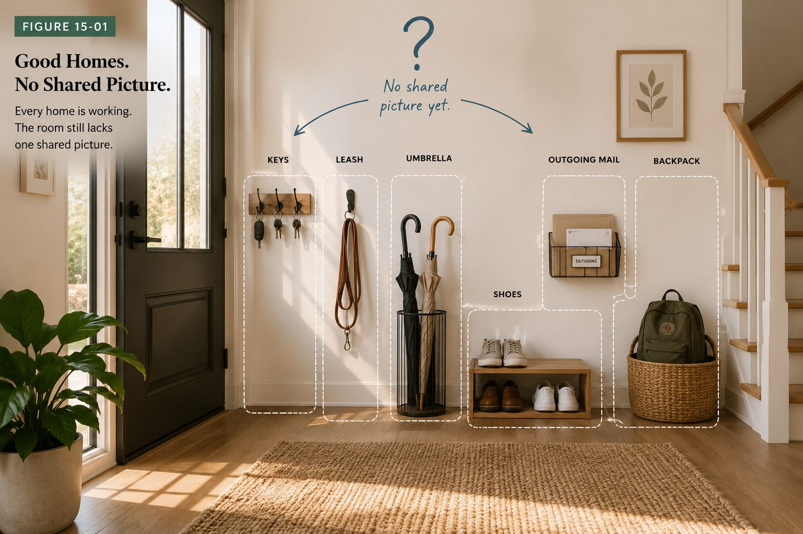
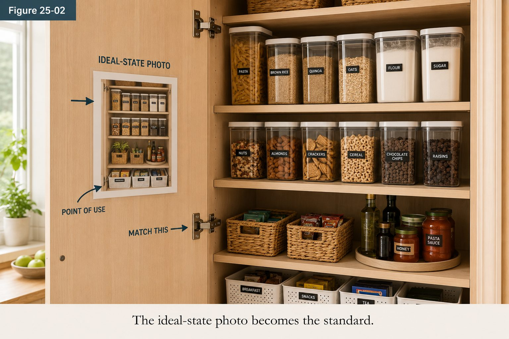

About
6S Success takes a method that quietly runs the best workplaces in the world and makes it work where you actually live. Not a tidier you. A better system, so a calm home holds even on a hard day.

The story
It started on the factory floor, where six moves in order strip out the waste that slows everything down.
6S comes from Lean manufacturing: Sort, Straighten, Shine, Safety, Standardize, and Sustain. On a production line those six steps remove wasted motion, wasted time, and wasted searching, so the work flows and nothing gets lost.
A home has the same waste. The difference is that at home you are the worker, the manager, and the customer, all at once. There is no shift change and no one else to write the standard. So the method matters even more, not less.
Here is the insight the whole company is built on. You do not need to become a more disciplined person. You need a method that carries the discipline for you. Change the method, not your character, and the home starts to hold on its own.
What we believe
Simple beliefs, held on purpose. They shape the book, the tools, and every reset we run.
A cluttered room is a system problem, not a character flaw. We fix the setup, not the person, so progress feels like relief instead of blame.
Safety is the fourth S, and the one that makes this a home method. Anchored furniture, working alarms, and clear paths come before anything looks pretty.
Small resets on a steady rhythm beat one heroic weekend. And a home holds best when the whole household shares the same simple system.
A home is never done, and that is fine. Sustain is a practice you keep, not a finish line you cross. You renew the standard, again and again.
The method in brief
Each S is one clear move. Done in order, they carry a home from friction to calm.
The company behind it
Nova Consulting has spent years bringing Lean and the workplace 6S discipline to teams: assessments, kaizen events, written standards, and the audits that keep them alive. 6S Success is what happened when we pointed that same discipline at the place people care about most, their homes.
It is the same method on both sides of the door. The workplace edition sharpens how a team works. The home edition brings that clarity to daily life. If your workplace needs the original, our consultants still run it.

Who wrote this
Philip Kling has spent twenty years installing continuous improvement systems inside organizations, most of it as a Lean Six Sigma practitioner and Master Black Belt. 6S Success is the same discipline, rewritten for a house.
In 2007 he led a statewide operational redesign for the Idaho Department of Health and Welfare, taking a benefit process from thirty two days to under seven. In 2008 he became principal Lean Six Sigma consultant at McKinstry, a construction and engineering firm, where he ran a company wide Lean transformation, trained more than two hundred people, and cut cycle time by up to half.
One line from that engagement matters more than the rest here. Redesigning the warehouse as a flow based system reduced inventory levels and space requirements by eighty percent, and it did it through 6S standardization. Not more shelving. Less stuff, in better places, with a standard that held.
He then spent six years building continuous improvement systems at Amazon across a forty thousand person organization, saving roughly a million labour hours and training over a thousand people a year, and won the Amazon Services Management Innovation Award. He wrote Process Kaizen in 2012, a two hundred and thirty page book on documenting and improving any process.
None of that makes a house tidy on its own. What it does mean is that the six steps on this site are not invented advice. They are a working method, used on real operations with real numbers attached, pointed at the room you are standing in.
The short version
These are engagements, not endorsements. The companies named are former employers and clients; none of them endorse 6S Success.
Read the whole story in the book, or start the six-S method in your own first room this week.